Use R to explore station balance in bike share systems - and learn a little dplyr programming#
Creating a function to analyze events by date which takes “zero days” into account
Introduction#
One of the challenges in operating bike share systems is dealing with flow balance issues. While many stations might have pretty similar numbers of bikes being rented from them as are dropped off, others might be pretty imbalanced. In other words, some are net senders and some are net receivers. Net senders are more susceptible to customers showing up and finding no bike available, while net receivers may end up with full docks and customers having difficulty dropping off their bikes.
Extremely imbalanced stations also likely will have to resort to manually rebalancing their bike inventory using trucks (overnight) or riders with trikes (during the day) or teleportation (if that was a thing). There’s a nice blog post, NYC Citi Bike Visualization - A Hint of Future Transportation, which uses an R Shiny app to facilitate visualization and exploration of station flow balance. As the author points out, the rebalancing problem pops up in a number of fleet optimization problems and has attracted the attention of operations research folks.
Freund et al have collaborated on several papers that propose a number of optimization and simulation models for various aspects of bike share rebalancing problems based. Their work has been piloted in New York City in their Citi Bike system. Check these out:
Minimizing Multimodular Functions and Allocating Capacity in Bike-Sharing Systems
Simulation Optimization for a Large-scale Bike-sharing System
In this blog post, we are just going to take a look at using R to compute and visualize station flow balance metrics. In doing this, we’ll develop an R function for the general problem of counting the number of events by date and by one or more grouping fields. This function will rely on the dplyr package and thus we’ll have to dig into issues related to non-standard evaluation and use quosures and other advanced dplyr programming features.
Getting and prepping the bike share data#
We are going to use data from San Francisco’s cycle share system. It’s available from Kaggle at https://www.kaggle.com/benhamner/sf-bay-area-bike-share/version/1.
There are several files:
station.csv - one row per station. Includes lat/lon, city, dock count and install date
trip.csv - one row per trip with standard fields. Includes a zip code that is user entered (according to answer in Discussion forum)
weather.csv - one row per date per zip code with min, mean, and max of several weather related variables
status.csv - bikes available and docks available at the minute level by station
For this post, we’ll just be using trip and station data.
Station data#
Read in the csv file and do a little data type fixing using the readr package.
library(dplyr)
library(ggplot2)
library(lubridate)
library(readr)
library(tidyr)
station <- read_csv("data/raw/station.csv",
col_types = cols(id = col_integer(),
dock_count = col_integer(),
installation_date = col_date(format = "%m/%d/%Y")))
station$id <- as.factor(station$id)
str(station, give.attr=FALSE)
## Classes 'spec_tbl_df', 'tbl_df', 'tbl' and 'data.frame': 70 obs. of 7 variables:
## $ id : Factor w/ 70 levels "2","3","4","5",..: 1 2 3 4 5 6 7 8 9 10 ...
## $ name : chr "San Jose Diridon Caltrain Station" "San Jose Civic Center" "Santa Clara at Almaden" "Adobe on Almaden" ...
## $ lat : num 37.3 37.3 37.3 37.3 37.3 ...
## $ long : num -122 -122 -122 -122 -122 ...
## $ dock_count : int 27 15 11 19 15 15 15 15 15 19 ...
## $ city : chr "San Jose" "San Jose" "San Jose" "San Jose" ...
## $ installation_date: Date, format: "2013-08-06" "2013-08-05" ...
Hmmm, should we convert name and city to factors? The name values will be in the trip table and
we’ll want to use join type operations to get station level information (e.g. the lat/lon). I guess
I never thought carefully about this and was just trusting base R merge and dplyr joins to coerce
factors to strings if needed (e.g. the levels in the two tables don’t match perfectly). Some
good posts on this are:
For dplyr, coercion to strings is done if needed and a warning raised.
Trip table#
This is the primary table we’ll use for analysis.
trip <- read_csv("data/raw/trip.csv",
col_types = cols(id = col_integer(),
start_station_id = col_integer(),
end_station_id = col_integer(),
bike_id = col_integer(),
zip_code = col_integer()))
Convert start and end dates to date times.
trip$start_date <- as.POSIXct(trip$start_date, format="%m/%d/%Y %H:%M")
trip$end_date <- as.POSIXct(trip$end_date, format="%m/%d/%Y %H:%M")
Let’s convert some of the fields to factors.
trip$start_station_id <- as.factor(trip$start_station_id)
trip$end_station_id <- as.factor(trip$end_station_id)
trip$subscription_type <- as.factor(trip$subscription_type)
trip$zip_code <- as.factor(trip$zip_code)
For analytical convenience, let’s create some new fields in the trip data frame.
Date parts#
Use the start_date as a basis and add some date part fields.
trip <- trip %>%
mutate(trip_date = date(start_date),
start_year = year(start_date),
start_month = month(start_date),
start_hour = hour(start_date),
start_dow = wday(start_date),
trip_ym = floor_date(start_date, "month"))
We’ll likely want to do some day of week analysis.
trip$start_dow <- as.factor(trip$start_dow)
levels(trip$start_dow) <- c("Su", "Mo", "Tu", "We", "Th", "Fr", "Sa")
trip$start_weekday <- trip$start_dow %in% 2:6
trip$start_weekday <- as.factor(trip$start_weekday)
levels(trip$start_weekday) <- c("Weekend", "Weekday")
Trip type#
If start and end points are the same, it’s a “round trip”.
trip <- trip %>%
mutate(round_trip = (start_station_id == end_station_id))
trip$round_trip <- as.factor(trip$round_trip)
levels(trip$round_trip) <- c("One way", "Round trip")
Trip geography#
Let’s pull in the start and end cities (based on zip code in the station data frame) and create a few more fields based on the starting location and on ending location.
trip <- trip %>%
left_join(station, by = c("start_station_id" = "id")) %>%
mutate(start_city = city,
start_lat = lat,
start_long = long) %>%
select(-c(city, name, lat, long, dock_count, installation_date))
trip <- trip %>%
left_join(station, by = c("end_station_id" = "id")) %>%
mutate(end_city = city,
end_lat = lat,
end_long = long) %>%
select(-c(city, name, lat, long, dock_count, installation_date))
Here’s our prepped trip data frame:
str(trip)
## Classes 'tbl_df', 'tbl' and 'data.frame': 669959 obs. of 25 variables:
## $ id : int 4576 4607 4130 4251 4299 4927 4500 4563 4760 4258 ...
## $ duration : num 63 70 71 77 83 103 109 111 113 114 ...
## $ start_date : POSIXct, format: "2013-08-29 14:13:00" "2013-08-29 14:42:00" ...
## $ start_station_name: chr "South Van Ness at Market" "San Jose City Hall" "Mountain View City Hall" "San Jose City Hall" ...
## $ start_station_id : Factor w/ 70 levels "2","3","4","5",..: 55 9 21 9 55 48 3 7 55 9 ...
## $ end_date : POSIXct, format: "2013-08-29 14:14:00" "2013-08-29 14:43:00" ...
## $ end_station_name : chr "South Van Ness at Market" "San Jose City Hall" "Mountain View City Hall" "San Jose City Hall" ...
## $ end_station_id : Factor w/ 70 levels "2","3","4","5",..: 55 9 21 9 56 48 4 7 55 10 ...
## $ bike_id : int 520 661 48 26 319 527 679 687 553 107 ...
## $ subscription_type : Factor w/ 2 levels "Customer","Subscriber": 2 2 2 2 2 2 2 2 2 2 ...
## $ zip_code : Factor w/ 7427 levels "0","1","2","3",..: 6254 6564 6880 6516 6231 6237 6539 6539 6231 6516 ...
## $ trip_date : Date, format: "2013-08-29" "2013-08-29" ...
## $ start_year : num 2013 2013 2013 2013 2013 ...
## $ start_month : num 8 8 8 8 8 8 8 8 8 8 ...
## $ start_hour : int 14 14 10 11 12 18 13 14 17 11 ...
## $ start_dow : Factor w/ 7 levels "Su","Mo","Tu",..: 5 5 5 5 5 5 5 5 5 5 ...
## $ trip_ym : POSIXct, format: "2013-08-01" "2013-08-01" ...
## $ start_weekday : Factor w/ 2 levels "Weekend","Weekday": 1 1 1 1 1 1 1 1 1 1 ...
## $ round_trip : Factor w/ 2 levels "One way","Round trip": 2 2 2 2 1 2 1 2 2 1 ...
## $ start_city : chr "San Francisco" "San Jose" "Mountain View" "San Jose" ...
## $ start_lat : num 37.8 37.3 37.4 37.3 37.8 ...
## $ start_long : num -122 -122 -122 -122 -122 ...
## $ end_city : chr "San Francisco" "San Jose" "Mountain View" "San Jose" ...
## $ end_lat : num 37.8 37.3 37.4 37.3 37.8 ...
## $ end_long : num -122 -122 -122 -122 -122 ...
Save for use in future analysis.
save(station, trip, file = "data/processed/station_trip.Rdata")
Ins and outs by station#
Compute number of trips per day out and in by station, subtract the the number of outs from ins and call it balance. A positive value of
balance corresponds to a station receiving more bikes during that day than
departed from that station.
Let’s do this for the period 2014-01-01 through 2015-08-31.
startdate <- ymd("2014-01-01")
enddate <- ymd("2015-08-31")
# Create a vector of dates over this range
dates <- seq(startdate, enddate, by='days')
There are 608 days in this range.
Since we eventually want to compute summary statistics for balance by station, care is required in doing the trip counts. There is no guarantee that every station has trips into and/or out of on every date in the range of interest - i.e. there are “zero days”. The final counts of the following query should be 608 for all stations if there were no zero days.
num_out_station_date <- trip %>%
filter(between(trip_date, startdate, enddate)) %>%
group_by(start_station_id, trip_date) %>%
count()
num_out_station_date %>%
group_by(start_station_id) %>%
count() %>%
head(n = 10)
## # A tibble: 10 x 2
## # Groups: start_station_id [10]
## start_station_id nn
## <fct> <int>
## 1 2 582
## 2 3 493
## 3 4 586
## 4 5 417
## 5 6 568
## 6 7 547
## 7 8 447
## 8 9 525
## 9 10 482
## 10 11 491
Clearly there are zero days and ignoring them when computing quantities such as mean balance would lead to overestimates. Let’s plot the the number of non-zero days by station.
ggplot(num_out_station_date) + geom_bar(aes(x=start_station_id)) +
geom_hline(aes(yintercept = length(dates))) +
coord_flip()
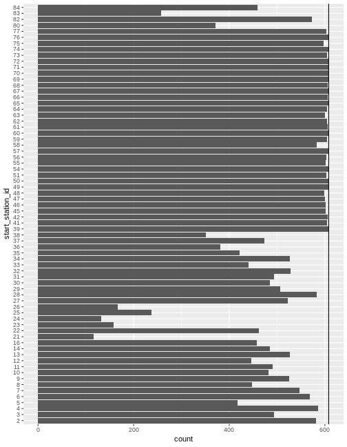
In a series of recent posts,
I showed how to deal with the zero days issue using Python with heavy use of the pandas package. The second post ends with a little R based version using the NYC Flights data.
The main purpose of this post is to develop a pretty general R function for doing counts of events by date and one or more grouping fields. For example, we need number of arrivals and departures of bikes by date and station in order to compute balance. We might also want to compute things like the average number of rentals by station and subscription type. It would be nice to have an R function in which we could pass in the following input arguments:
data frame
start date
end date
trip date field
zero or more additional fields to group by
The function will lean on the dplyr package and we want it to work like dplyr verbs in that we can pass in unquoted field names.
Let’s run through it manually first and then convert to a function. To simplify
things, let’s assume that we just have one additional grouping field - start_station_id.
# Specify date range
startdate <- ymd("2014-01-01")
enddate <- ymd("2015-08-31")
# Get unique values of date and grouping field
dates <- seq(startdate, enddate, by='days')
# For simplicity, for now, let's just use the `id` field from the station table.
stations <- station$id
# Use expand.grid to create all the combinations (the fully seeded table)
date_station <- expand.grid(stations, dates)
names(date_station) <- c("start_station_id", "trip_date")
# Get sorted by station and date
date_station <- date_station %>%
arrange(start_station_id, trip_date)
# Count trips out
num_out_station_date <- trip %>%
filter(between(trip_date, startdate, enddate)) %>%
group_by(start_station_id, trip_date) %>%
count()
# Join the fully seeded table, `date_station`, to `num_out_station_date`.
num_out_station_date <- date_station %>%
left_join(num_out_station_date, by = c("start_station_id", "trip_date"))
# Replace the NAs with 0's.
num_out_station_date$n <- num_out_station_date$n %>% replace_na(0)
Let’s confirm.
date_counts <- num_out_station_date %>%
group_by(start_station_id) %>%
count()
range(date_counts$nn)
## [1] 608 608
This is such a common task, it would be nice to have a function to do it. Ideally, it would be nice to pass multiple grouping fields along with a date range. To start, consider one grouping field.
Do counts of bike trips out of each station. I want to be able to do this:
num_out <- counts_by_date_group(trip, startdate, enddate, trip_date, start_station_id)
Creating the counts_by_date_group function#
The trickiness involved in creating this function is that I want to be able to call it like a dplyr verb (unquoted column names) and to use dplyr itself in the function. The following dplyr vignette is essential reading - https://cran.r-project.org/web/packages/dplyr/vignettes/programming.html.
A key concept is that of a quosure - a construct that stores both an expression as well as its environment. It’s a special type of formula. Using the R Studio debugging tools to step through the following function is a great way to see all the details. The code is heavily commented, including alternative ways of doing a few things.
counts_by_date_group <- function(df, start, end, date_var, group_var){
# Use enquo to enable dplyr style calling. Both date_var and group_var are
# converted to quosures.
date_var <- enquo(date_var)
group_var <- enquo(group_var)
# Need to use quo_name() to convert group_var quosure to string
# to use as new column name
group_var_name <- quo_name(group_var)
date_var_name <- quo_name(date_var)
# Create sequence of dates
dates <- seq(start, end, by='days')
# Now I want the unique values of the grouping variable
# The following results in a one column tibble. Yes, even with as.vector().
# grp <- as.vector(unique(df[, group_var]))
# To get as actual vector, need to do this using dplyr::pull.
# Need to use !! to unqoute group_var so that it gets evaluated.
grp <- df %>% distinct(!!group_var) %>% pull()
# Or this using unlist
# grp <- unlist(unique(df[, group_var]), use.names = FALSE)
# Use expand.grid() to create the fully seeded data frame
date_grp <- expand.grid(grp, dates)
names(date_grp) <- c(group_var_name, date_var_name)
# Get sorted by station and date
date_grp <- date_grp %>%
arrange(!!group_var, !!date_var)
# Count trips out (again notice use !! with date_var quosure)
counts_group_date <- df %>%
filter(between(!!date_var, startdate, enddate)) %>%
group_by(!!group_var, !!date_var) %>%
count()
# Join the fully seeded data frame to the count data frame
counts_group_date <- date_grp %>%
left_join(counts_group_date, by = c(group_var_name, date_var_name))
# Replace the NAs with 0's.
counts_group_date$n <- counts_group_date$n %>% replace_na(0)
# Return the data frame
counts_group_date
}
Whew! Let’s finish exploring the balance question and then we’ll return to this and generalize our function to handle multiple grouping fields.
num_out <- counts_by_date_group(trip, startdate, enddate, trip_date, start_station_id)
head(num_out)
## start_station_id trip_date n
## 1 2 2014-01-01 0
## 2 2 2014-01-02 6
## 3 2 2014-01-03 15
## 4 2 2014-01-04 2
## 5 2 2014-01-05 12
## 6 2 2014-01-06 15
Back to the balance analysis#
Now do counts of trips into each station.
num_in <- counts_by_date_group(trip, startdate, enddate, trip_date, end_station_id)
head(num_in)
## end_station_id trip_date n
## 1 2 2014-01-01 2
## 2 2 2014-01-02 9
## 3 2 2014-01-03 12
## 4 2 2014-01-04 4
## 5 2 2014-01-05 12
## 6 2 2014-01-06 15
Compute overall flow balance as num_in - num_out.
flow_balance_date <- num_in %>%
left_join(num_out, by = c("end_station_id" = "start_station_id", "trip_date"))
names(flow_balance_date) <- c("station_id", "trip_date", "num_in", "num_out")
flow_balance_date$station_id <- as.factor(flow_balance_date$station_id)
flow_balance_date <- flow_balance_date %>% mutate(
balance = num_in - num_out
)
head(flow_balance_date)
## station_id trip_date num_in num_out balance
## 1 2 2014-01-01 2 0 2
## 2 2 2014-01-02 9 6 3
## 3 2 2014-01-03 12 15 -3
## 4 2 2014-01-04 4 2 2
## 5 2 2014-01-05 12 12 0
## 6 2 2014-01-06 15 15 0
Let’s look at the distribution of balance by station using boxplots.
ggplot(flow_balance_date) +
geom_boxplot(aes(x = station_id, y = balance),
outlier.size = 0.1,
outlier.shape = 20)
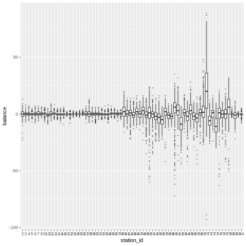
Let’s try to make it look nicer. Got some ideas from
http://shinyapps.stat.ubc.ca/r-graph-catalog/#fig04-11_museum-exhibitions-box-plot
https://www.r-graph-gallery.com/269-ggplot2-boxplot-with-average-value/
If you want to “zoom in” on the plot by changing the y-axis limits,
it’s important to change the limits with the coordinate system and not the
axis scale (e.g. inside of scale_y_continuous). The former doesn’t throw
out the points outside the limits (important for properly computing boxplot
elements) whereas latter does.
p <- ggplot(flow_balance_date, aes(x = station_id, y = balance)) +
geom_boxplot(outlier.shape = 20, outlier.size = 0.1) +
labs(x = "Station id", y = "Balance") +
coord_flip(ylim=c(-50, 50)) +
geom_hline(aes(yintercept = 0)) +
stat_summary(fun.y=mean, geom="point", shape=20, size=1, color="red", fill="red") +
ggtitle("Station balance") +
theme_bw() +
theme(plot.title = element_text(size = rel(1.2), face = "bold", vjust = 1.5),
axis.ticks.y = element_blank(),
axis.title.y = element_blank())
p
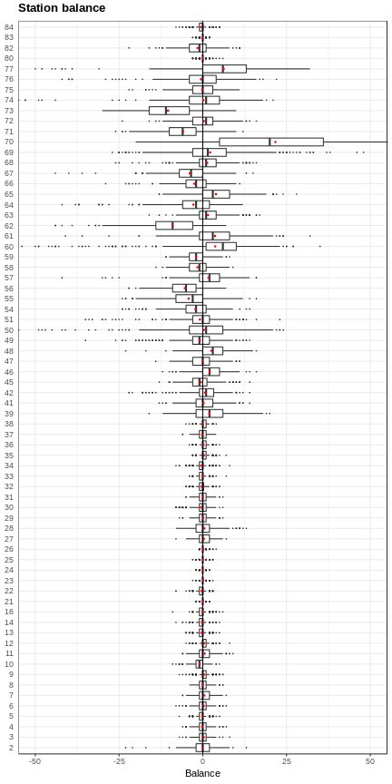
Summary stats are the quantities that would have been computed incorrectly had we neglected to take care of the zero days.
flow_balance_stats <- flow_balance_date %>%
group_by(station_id) %>%
summarize(
mean_balance = mean(balance),
sd_balance = sd(balance),
cv_balance = sd_balance / mean_balance,
p01_balance = quantile(balance, 0.01),
p05_balance = quantile(balance, 0.05),
q1_balance = quantile(balance, 0.25),
median_balance = median(balance),
q3_balance = quantile(balance, 0.75),
p95_balance = quantile(balance, 0.95),
p99_balance = quantile(balance, 0.99)
) %>%
arrange(mean_balance)
head(flow_balance_stats)
## # A tibble: 6 x 11
## station_id mean_balance sd_balance cv_balance p01_balance p05_balance
## <fct> <dbl> <dbl> <dbl> <dbl> <dbl>
## 1 73 -10.4 7.60 -0.734 -27 -22
## 2 62 -9.00 7.41 -0.823 -31.9 -20
## 3 71 -5.89 5.89 -1.000 -20.9 -15
## 4 56 -5.36 5.14 -0.960 -19 -14
## 5 55 -4.23 6.24 -1.48 -20 -15
## 6 67 -3.86 6.27 -1.62 -20 -14
## # ... with 5 more variables: q1_balance <dbl>, median_balance <dbl>,
## # q3_balance <dbl>, p95_balance <dbl>, p99_balance <dbl>
Plot mean balance by station.
ggplot(flow_balance_stats) +
geom_bar(aes(x=reorder(station_id, mean_balance), y=mean_balance),
stat = "identity") +
coord_flip()
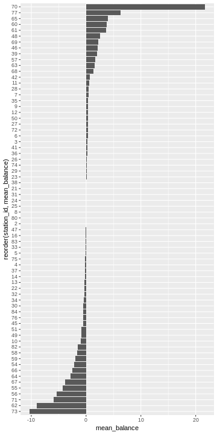
What about median instead of mean?
ggplot(flow_balance_stats) +
geom_bar(aes(x=reorder(station_id, median_balance), y=median_balance),
stat = "identity") + xlab("Station id") +
theme(axis.text.y = element_text(size=6)) +
coord_flip()
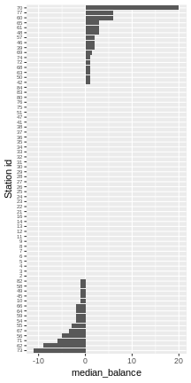
Obviously this is just a first look at balance. Lots more to do. But, let’s get back to the function we wrote to do the counts by date and station. For this application, a single grouping field is fine. However, what if we want to do stats by station and subscription type?
Generalizing the counts_by_date_group function#
There are two generalization I wanted:
multiple grouping fields
specify the time bin size (e.g hourly)
For now, I’m just going to do the multiple grouping fields and save the finer time bins for another day.
I wrote a little helper function to return a vector of unique values from a specified data frame and column.
unique_vals_vector <- function(df, col){
unlist(unique(df[, col]), use.names = FALSE)
}
Since multiple grouping variables can be passed in, we need to do a few things
differently in our function. For example, the quos() function is used
to create a list of quosures from the ... arguments and the !!! operator is used to
splice this list of quosures into function calls (such as group_by()).
counts_by_date_groups <- function(df, start, end, date_var, ...){
# Use enquo to enable dplyr style calling
date_var <- enquo(date_var)
# Get list of quosures of the grouping variables
group_vars <- quos(...)
num_group_vars <- length(group_vars)
# Need to use quo_name() to convert group_var quosure to string
# to use as new column name
group_var_names <- lapply(group_vars, quo_name)
date_var_name <- quo_name(date_var)
all_names <- c(group_var_names, date_var_name)
# Create vector of dates over specified range
dates <- seq(start, end, by='days')
# There may be some clever lapply approach to this, but I'm just going to
# use a loop to construct a list of vectors containing the unique values
# for each of the grouping fields (not including the date)
group_vals_unique <- list()
for (gvn in group_var_names){
unique_vals <- unique_vals_vector(df, gvn)
group_vals_unique <- c(group_vals_unique, list(unique_vals))
}
group_vals_unique <- c(group_vals_unique, list(dates))
# Use expand.grid() to create the fully seeded data frame
date_grps <- expand.grid(group_vals_unique)
names(date_grps) <- all_names
# Count events. Note the use of !!! to "splice" the group_vars list into the
# group_by() call
counts_groups_date <- df %>%
filter(between(!!date_var, startdate, enddate)) %>%
group_by(!!!group_vars, !!date_var) %>%
count()
# Join the fully seeded data frame to the count data frame
counts_groups_date <- date_grps %>%
left_join(counts_groups_date)
# Get sorted by group vars and date
counts_groups_date <- counts_groups_date %>%
arrange(!!!group_vars, !!date_var)
# Replace the NAs with 0's.
counts_groups_date$n <- counts_groups_date$n %>% replace_na(0)
counts_groups_date
}
Now we can count the number of trips by date, start station and subscription type.
num_trips_start_sub <- counts_by_date_groups(trip, startdate, enddate,
trip_date, start_station_id, subscription_type)
## Joining, by = c("start_station_id", "subscription_type", "trip_date")
stats_trips_start_sub <- num_trips_start_sub %>%
group_by(start_station_id, subscription_type) %>%
summarize(
mean_numtrips = mean(n),
sd_numtrips = sd(n),
cv_numtrips = sd_numtrips / mean_numtrips,
p01_numtrips = quantile(n, 0.01),
p05_numtrips = quantile(n, 0.05),
q1_numtrips = quantile(n, 0.25),
median_numtrips = median(n),
q3_numtrips = quantile(n, 0.75),
p95_numtrips = quantile(n, 0.95),
p99_numtrips = quantile(n, 0.99),
iqr_numtrips = q3_numtrips - q1_numtrips
)
head(stats_trips_start_sub)
## # A tibble: 6 x 13
## # Groups: start_station_id [3]
## start_station_id subscription_ty… mean_numtrips sd_numtrips cv_numtrips
## <fct> <fct> <dbl> <dbl> <dbl>
## 1 2 Customer 0.660 1.14 1.73
## 2 2 Subscriber 12.9 8.47 0.657
## 3 3 Customer 1.14 1.86 1.63
## 4 3 Subscriber 1.07 1.13 1.06
## 5 4 Customer 0.464 1.12 2.40
## 6 4 Subscriber 4.99 2.79 0.559
## # ... with 8 more variables: p01_numtrips <dbl>, p05_numtrips <dbl>,
## # q1_numtrips <dbl>, median_numtrips <dbl>, q3_numtrips <dbl>,
## # p95_numtrips <dbl>, p99_numtrips <dbl>, iqr_numtrips <dbl>
What if we had ignored the possibility of zero days?
# Count trips
num_trips_start_sub_ignorezdays <- trip %>%
filter(between(trip_date, startdate, enddate)) %>%
group_by(start_station_id, subscription_type, trip_date) %>%
count()
# Summarize
stats_trips_start_sub_ignorezdays <- num_trips_start_sub_ignorezdays %>%
group_by(start_station_id, subscription_type) %>%
summarize(
mean_numtrips = mean(n),
sd_numtrips = sd(n),
cv_numtrips = sd_numtrips / mean_numtrips,
p01_numtrips = quantile(n, 0.01),
p05_numtrips = quantile(n, 0.05),
q1_numtrips = quantile(n, 0.25),
median_numtrips = median(n),
q3_numtrips = quantile(n, 0.75),
p95_numtrips = quantile(n, 0.95),
p99_numtrips = quantile(n, 0.99),
iqr_numtrips = q3_numtrips - q1_numtrips
)
head(stats_trips_start_sub_ignorezdays)
## # A tibble: 6 x 13
## # Groups: start_station_id [3]
## start_station_id subscription_ty… mean_numtrips sd_numtrips cv_numtrips
## <fct> <fct> <dbl> <dbl> <dbl>
## 1 2 Customer 1.71 1.26 0.740
## 2 2 Subscriber 13.7 8.06 0.586
## 3 3 Customer 2.41 2.06 0.856
## 4 3 Subscriber 1.75 0.955 0.545
## 5 4 Customer 2.10 1.48 0.705
## 6 4 Subscriber 5.23 2.62 0.500
## # ... with 8 more variables: p01_numtrips <dbl>, p05_numtrips <dbl>,
## # q1_numtrips <dbl>, median_numtrips <dbl>, q3_numtrips <dbl>,
## # p95_numtrips <dbl>, p99_numtrips <dbl>, iqr_numtrips <dbl>
Join the two summary stats data frames and then we can scatter individual statistics against each other (one having been computed with proper treatment of zero days and the other not).
stats_joined <- stats_trips_start_sub %>%
inner_join(stats_trips_start_sub_ignorezdays,
by = c("start_station_id", "subscription_type"))
g <- ggplot(stats_joined) +
xlab("Zero days included") +
ylab("Zero days ignored")
g + ggtitle("Mean number of trips per day per station") +
geom_point(aes(x = mean_numtrips.x, y = mean_numtrips.y)) +
geom_abline()
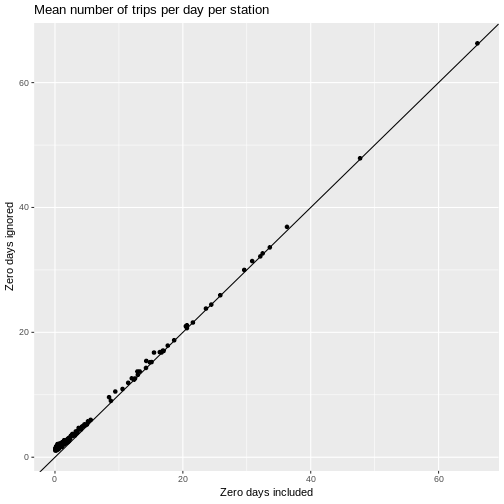
For higher volume stations, of course, zero days are pretty rare. Let’s zoom in on the lower volume stations.
g + ggtitle("Mean number of trips per day per station") +
geom_point(aes(x = mean_numtrips.x, y = mean_numtrips.y)) +
geom_abline() +
coord_cartesian(xlim=c(0,20), ylim=c(0, 20))
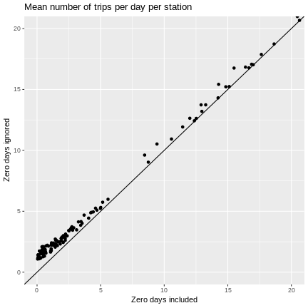
Is the median less susceptible to zero day induced bias? Seems like it should be since less affected by outliers. But, integer nature of the data may lead to bias. While we are at it, let’s try an upper quantile and a measure of variability.
g + ggtitle("Median number of trips per day per station") +
geom_point(aes(x = median_numtrips.x, y = median_numtrips.y)) +
geom_abline() +
coord_cartesian(xlim=c(0,20), ylim=c(0, 20))
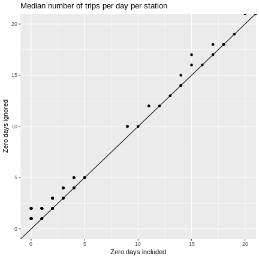
g + ggtitle("95th %ile number of trips per day per station") +
geom_point(aes(x = p95_numtrips.x, y = p95_numtrips.y)) +
geom_abline() +
coord_cartesian(xlim=c(0,20), ylim=c(0, 20))
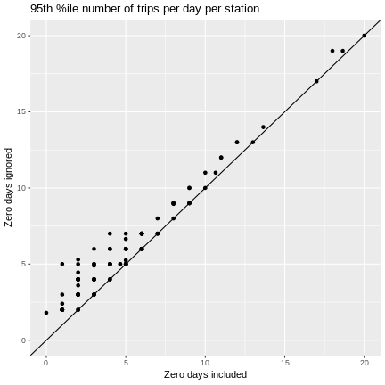
g + ggtitle("Std dev of number of trips per day per station") +
geom_point(aes(x = sd_numtrips.x, y = sd_numtrips.y)) +
geom_abline() +
coord_cartesian(xlim=c(0,15), ylim=c(0, 15))
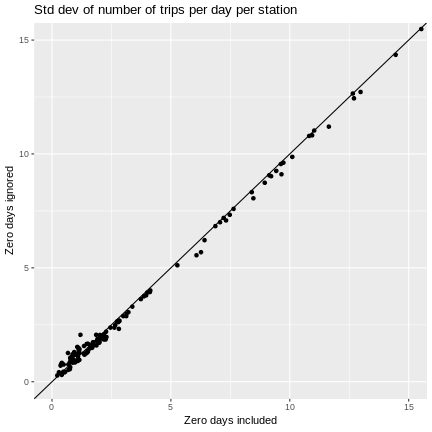
g + ggtitle("IQR of number of trips per day per station") +
geom_point(aes(x = iqr_numtrips.x, y = iqr_numtrips.y)) +
geom_abline() +
coord_cartesian(xlim=c(0,15), ylim=c(0, 15))
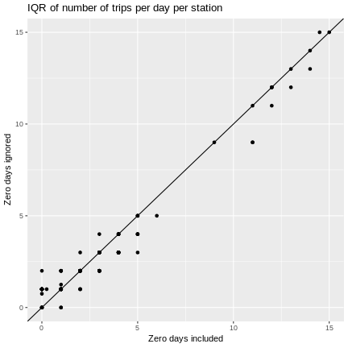
As we might have guessed, ignoring zero days can cause means and quantiles to be overestimated and measures of variability to be underestimated.
Seems like a good place to stop for now. Next steps:
make sure this works for zero grouping fields
extend as needed to do day of week and time of day based analysis for zero or more grouping fields
tidy up the code, create documentation, create package and release
You can find this post along with a pile of other related, but unorganized, code in the following GitHub repo - https://github.com/misken/sfcs.